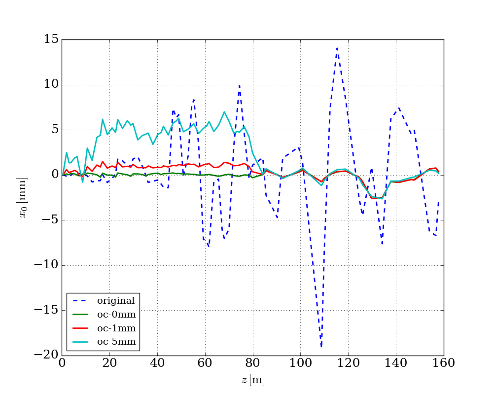

Run optimization¶
If running optimization not by simple_run() method, another approach
should be utilized.
# generate input file for optimization
oc_ins.gen_dakota_input()
# run optimization
oc_ins.run(mpi=True, np=4)
Below is a typical user customized script to find the optimized correctors configurations.
import os
import genopt
""" orbit correction demo
"""
latfile = 'test_392.lat'
oc_ins = genopt.DakotaOC(lat_file=latfile,
workdir='./oc_tmp4',
keep=True)
# set BPMs and correctors
bpms = oc_ins.get_elem_by_type('bpm')
hcors = oc_ins.get_all_cors(type='h')[0:40]
vcors = oc_ins.get_all_cors(type='v')[0:40]
oc_ins.set_bpms(bpm=bpms)
oc_ins.set_cors(hcor=hcors, vcor=vcors)
# set parameters
oc_ins.set_variables()
# set interface
oc_ins.set_interface()
# set responses
r = genopt.DakotaResponses(gradient='numerical',step=2.0e-5)
oc_ins.set_responses(r)
# set model
m = genopt.DakotaModel()
oc_ins.set_model(m)
# set method
md = genopt.DakotaMethod(method='ps',
max_function_evaluations=1000)
oc_ins.set_method(method=md)
# set environment
tabfile = os.path.abspath('./oc_tmp4/dakota1.dat')
e = genopt.dakutils.DakotaEnviron(tabfile=tabfile)
oc_ins.set_environ(e)
# set reference orbit
bpms_size = len(oc_ins.bpms)
ref_x0 = np.ones(bpms_size)*0.0
ref_y0 = np.ones(bpms_size)*0.0
oc_ins.set_ref_x0(ref_x0)
oc_ins.set_ref_y0(ref_y0)
# set objective function
oc_ins.ref_flag = "xy"
# generate input
oc_ins.gen_dakota_input()
# run
oc_ins.run(mpi=True, np=4)
#print oc_ins.get_opt_results()
# get output
oc_ins.get_orbit((oc_ins.hcors, oc_ins.vcors), oc_ins.get_opt_results(),
outfile='orbit.dat')
# plot
#oc_ins.plot()
The following figure shows correct the orbit to different reference orbits.
{kind=link}